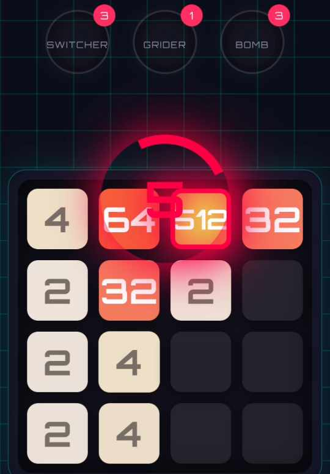

Table of Contents
Let me start with the truth: Hard Mode in Grid Evolution 2048 does not want you to win.
It watches you build confidence. It lets you feel smart. It smiles politely while you merge your way to 256 and 512.
And then, very calmly; it starts attacking you.
If you are here, chances are you have already experienced that moment. You hit the 512 tile, you feel proud… and suddenly the grid decides it has had enough of your success.
This article is not about luck. It is not about swiping faster. And it is definitely not about praying to the RNG gods.
This is about beating the 4096 tile on Hard Mode by understanding how the game thinks—and then outthinking it.
Understanding Hard Mode (Before It Understands You)
Hard Mode in Grid Evolution works differently from classic 2048. It is not just “less forgiving”. It is actively hostile.
The moment you create a 512 tile, the game unlocks what I lovingly call: tile attacks.
These attacks do not flood the board all at once. Instead, they arrive one tile at a time, targeting your larger tiles.
At first, this feels terrifying. But here is the twist:
One tile at a time means the game is giving you room to fight back.
Hard Mode is not unfair. It is demanding.
The Core Rule: Space Is Survival
If you take only one thing away from this article, let it be this:
Always maintain at least two empty tile spaces around every large tile.
This is the single most important rule for surviving past 1024 and eventually reaching 2048 and 4096.
Why?
Because tile attacks need space to cause damage. If your board is already tight, one bad spawn can collapse your entire setup.
But if you deliberately create breathing room, attacks become manageable interruptions instead of game-ending disasters.
Think of empty tiles as shock absorbers. No space? No mercy.
Why Rushing Is the Fastest Way to Lose
I see this mistake constantly:
Players rush to merge into 512, then 1024, without preparing the board.
In Normal Mode, this works. In Hard Mode, it is a trap.
The moment a large tile appears, the game raises the pressure. If your board is cluttered, Hard Mode will punish you immediately.
High-level strategy means delaying merges when necessary. Yes, even when the merge is right there. Yes, even when it hurts emotionally.
Control the board first. Upgrade second.
Corner Anchoring (With an Escape Plan)
Classic 2048 strategy still applies here: anchor your highest tile in a corner.
Corners reduce chaos. Corners limit attack angles. Corners make your brain hurt less.
But Grid Evolution adds a twist.
If you lock your corner too tightly, attacks will choke you out.
The solution?
Anchor the corner, but leave an escape lane.
That escape lane—two empty spaces, minimum— allows you to reroute merges when the board is disrupted.
A trapped corner is not a fortress. It is a coffin.
The Snake Pattern: Order Beats Panic
Random swiping is the enemy of Hard Mode. The board must have structure.
The most reliable structure is the snake (or ladder) pattern.
Large tiles flow in one direction. Smaller tiles support them. Everything has a place.
When attacks disrupt the grid, the snake pattern lets you recover without starting over.
Hard Mode does not forgive chaos. It rewards discipline.
Treat Tile Attacks Like a Resource
This is the mental shift that separates good players from great ones.
Tile attacks are not random. They are predictable. They arrive one at a time.
That means you can plan for them.
Advanced players use attack tiles to:
- Rebuild broken merge chains
- Create secondary large tiles
- Clear awkward board states
Panic swiping turns attacks into killers. Calm repositioning turns them into tools.
When to Push for 2048 (And When to Wait)
The jump from 1024 to 2048 is where most Hard Mode runs die.
Not because it is impossible, but because players attempt it too early.
Before pushing past 1024, ask yourself:
- Do I have at least two open spaces?
- Is my highest tile protected?
- Can I recover if an attack lands badly?
If the answer is “no” to any of these, wait.
Hard Mode rewards patience far more than bravery.
Reaching 4096: The Endgame
By the time you are chasing 4096, the game is relentless.
Every move matters. Every empty space is priceless.
This is where your earlier discipline pays off. The buffer zones. The structure. The refusal to rush.
When 4096 finally appears, it will not feel lucky.
It will feel earned.
Final Thoughts (And a Small Warning)
Hard Mode is not designed to be comfortable. It is designed to be memorable.
You will lose runs that felt perfect. You will blame the game. You will swear you had everything under control.
And sometimes, you will be right.
But when you finally beat the 4096 tile, it will not be because the game was easy. It will be because you understood it.
And then, of course, you will immediately try to do it again.
Because that is the curse of a good puzzle game.
Good luck. And remember: space is survival.
Clinton Nwezeaku
Creator, Grid Evolution 2048